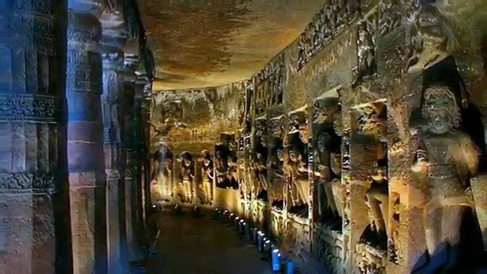
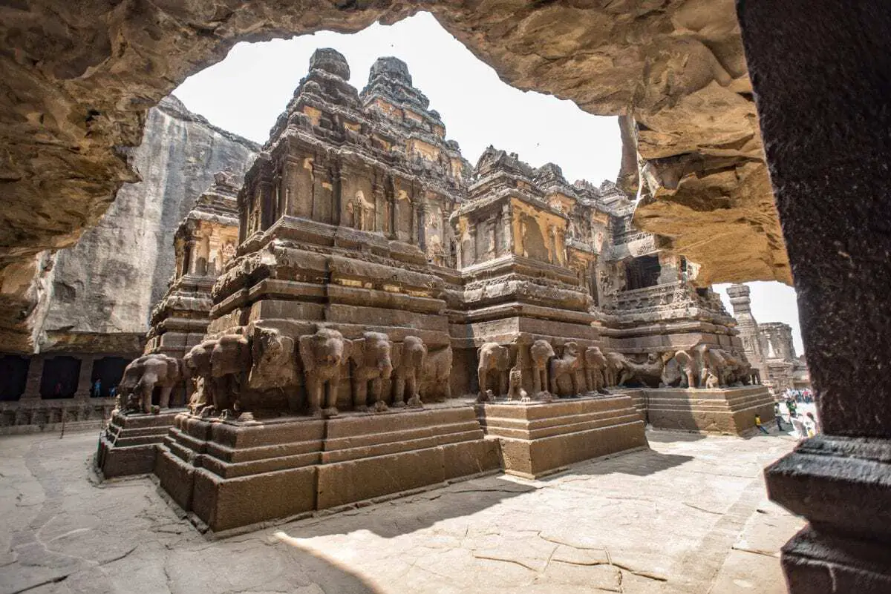
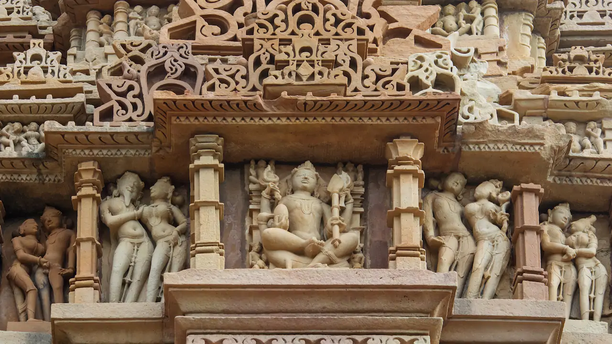
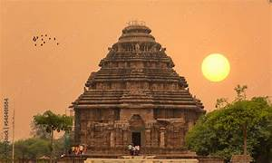
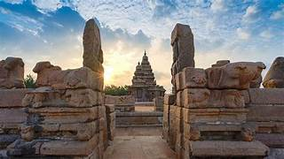
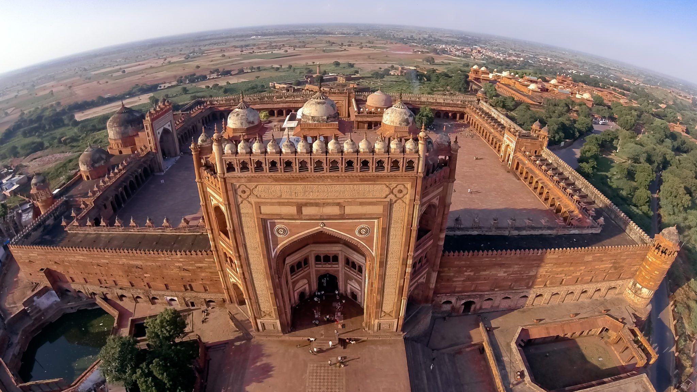
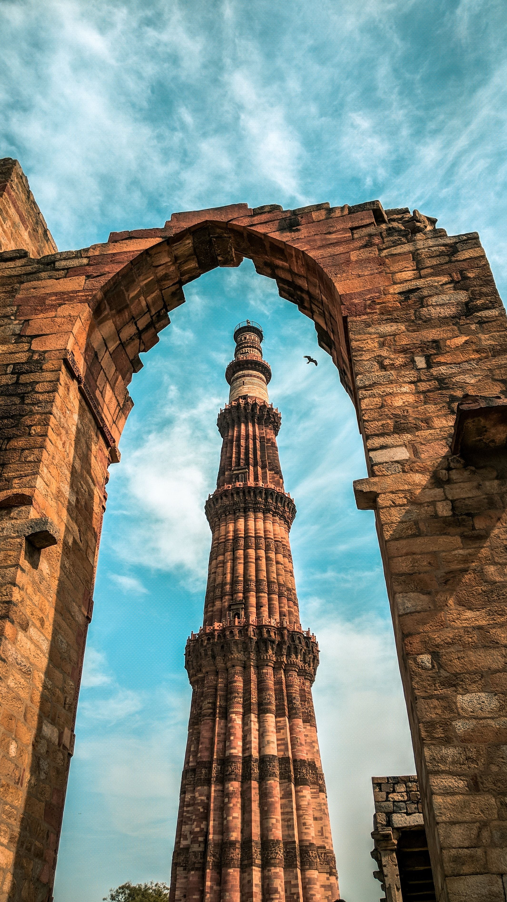

Famous UNESCO Sites

Taj Mahal, Agra
Year Inscribed: 1983
Built by Mughal Emperor Shah Jahan in memory of his wife Mumtaz Mahal, the Taj Mahal is considered the jewel of Muslim art in India. This white marble mausoleum took 22 years to complete (1632-1654) with 20,000 workers. The monument perfectly combines Persian, Turkish, and Indian architectural elements.
One of the Seven Wonders of the World

Hampi, Karnataka
Year Inscribed: 1986
The ruins of Hampi, capital of the Vijayanagara Empire (14th-16th century), cover an area of 26 square kilometers. The site contains 1,600 monuments including forts, temples, shrines, and ancient market streets. The Vittala Temple Complex with its stone chariot and musical pillars is world-famous.
Last great Hindu kingdom in South India

Ajanta Caves, Maharashtra
Year Inscribed: 1983
These 30 rock-cut Buddhist cave monuments date from 2nd century BCE to 6th century CE. The caves contain magnificent paintings and sculptures that are masterpieces of Buddhist religious art. The frescoes depict the Jataka tales and are considered some of the finest examples of ancient Indian art.
Rediscovered in 1819 by British officers

Ellora Caves, Maharashtra
Year Inscribed: 1983
A unique complex of 34 monasteries and temples carved into the rock face, representing Buddhist, Hindu, and Jain traditions. The Kailasa temple (Cave 16) is the world's largest monolithic rock excavation, carved from a single rock. It took 100 years to complete with an estimated 400,000 tons of rock removed.
Epitome of Indian rock-cut architecture

Khajuraho Group of Monuments
Year Inscribed: 1986
Built by the Chandela dynasty between 950-1050 CE, these temples are famous for their nagara-style architecture and erotic sculptures. Originally there were 85 temples, of which 25 survive today. The temples are dedicated to Hindu gods and Jain tirthankaras, showcasing exceptional artistic achievement.
Finest examples of Indian temple architecture

Konark Sun Temple, Odisha
Year Inscribed: 1984
Built in the 13th century by King Narasimhadeva I, this temple is designed as a giant chariot with 24 intricately carved stone wheels and pulled by seven horses. The temple is dedicated to the Sun God Surya and is renowned for its intricate stone carvings depicting life in 13th century India.
Also known as the Black Pagoda

Mahabalipuram, Tamil Nadu
Year Inscribed: 1984
Ancient port city of the Pallava dynasty (7th-8th century) featuring rock-cut temples, monolithic rathas (chariots), and the famous Shore Temple. The Descent of the Ganges relief is one of the world's largest open-air rock reliefs.

Fatehpur Sikri, Uttar Pradesh
Year Inscribed: 1986
Built by Emperor Akbar in 1571, this former Mughal capital was abandoned after only 14 years due to water scarcity. The red sandstone city showcases the finest Mughal architecture including Buland Darwaza, the world's tallest gateway.

Qutub Minar, Delhi
Year Inscribed: 1993
This 73-meter tall tower was built in 1193 by Qutub-ud-din Aibak to celebrate Muslim dominance in Delhi. The complex includes the Iron Pillar, a 7-meter column that has resisted corrosion for over 1,600 years, baffling scientists.